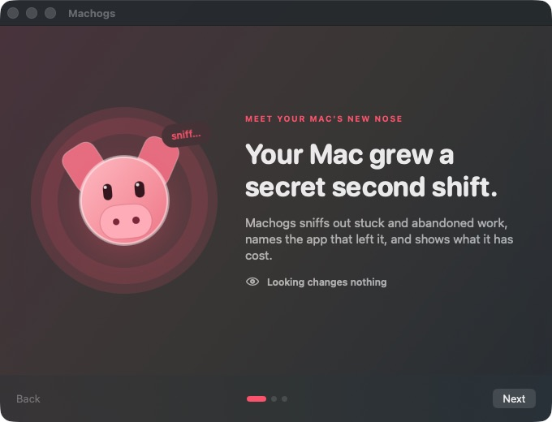
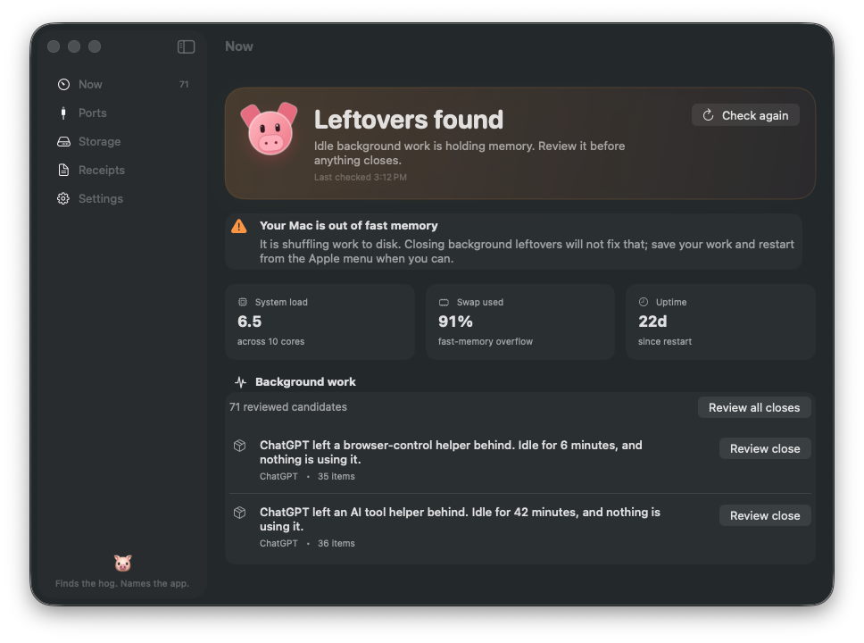

Why is my Mac struggling?
Meet the leftovers. See which app left them and whether closing them—or restarting—is the honest fix.
Machogs finds work your apps forgot to stop, tells you who left it, and asks before doing anything.
Free · macOS 13+ · Apple silicon + Intel · signed and notarized

No charts to decode. Pick the question that sounds like your Mac.
INSIDE THE APP · NOW · PORTS · STORAGE · RECEIPTS · SETTINGS
Meet the leftovers. See which app left them and whether closing them—or restarting—is the honest fix.
See the app and project using it. Protected and system ports stay put.
See the usual space hogs. Machogs only clears a safe cache after you choose the exact one.

Machogs shows the exact thing first. If you choose to close it, Machogs checks once more before touching it.
Claude Code left it · using almost one full CPU core · its parent app is gone
A menu-bar alert or notification opens this review. It cannot close anything.
If the thing changed or disappeared, Machogs leaves it alone.
Idle clutter wastes memory, not fan power. A full swap needs a restart.
Paste this into Codex, Claude Code, or Cursor. It will show you what the pig found and wait for your yes before closing anything.
Install machogs from github.com/bnishit/machogs, read its AGENTS.md, then tell me what is hogging my Mac. Do not close anything without showing me the findings and asking first.Start with a read-only check.
Name the app and say what it left behind.
Wait before a close, port kill, or cache clear.
Touch only the exact thing you approved.
Download the universal Mac app. Open the DMG, drag Machogs to Applications, and let the first read-only check explain what it finds.
Developer ID signed and Apple notarized · macOS 13+ · Apple silicon + Intel.
Prefer a terminal? brew install bnishit/tap/machogs installs the open-source CLI. CLI instructions →
Yes. Machogs 1.2.0 is a Developer ID-signed, Apple-notarized universal app for macOS 13 or later. Download the DMG.
No. Running machogs, machogs --json --sessions, machogs disk, or machogs ports is read-only. Process closes, port kills, and safe-cache clearing are separate actions.
No. Menu-bar and notification actions open the named item for review. A separate confirmation is required before the engine checks it again and acts.
No admin password, Full Disk Access, or Accessibility access is required. Notification and Start at Login choices are optional and explained in context.
Only after it shows you the findings and you agree. The agent instructions require a pause for consent and forbid bypassing protected processes.
Then they were wasting memory, not heating the Mac. Machogs says that plainly. If swap is above 80%, it tells you a restart is the real fix.